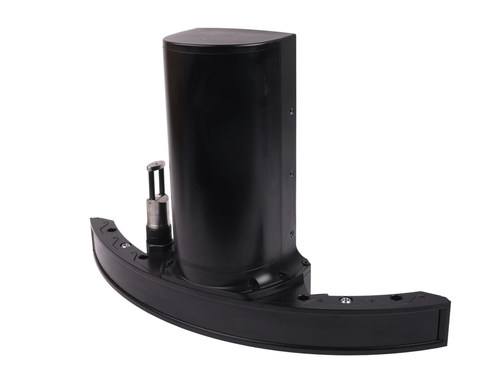
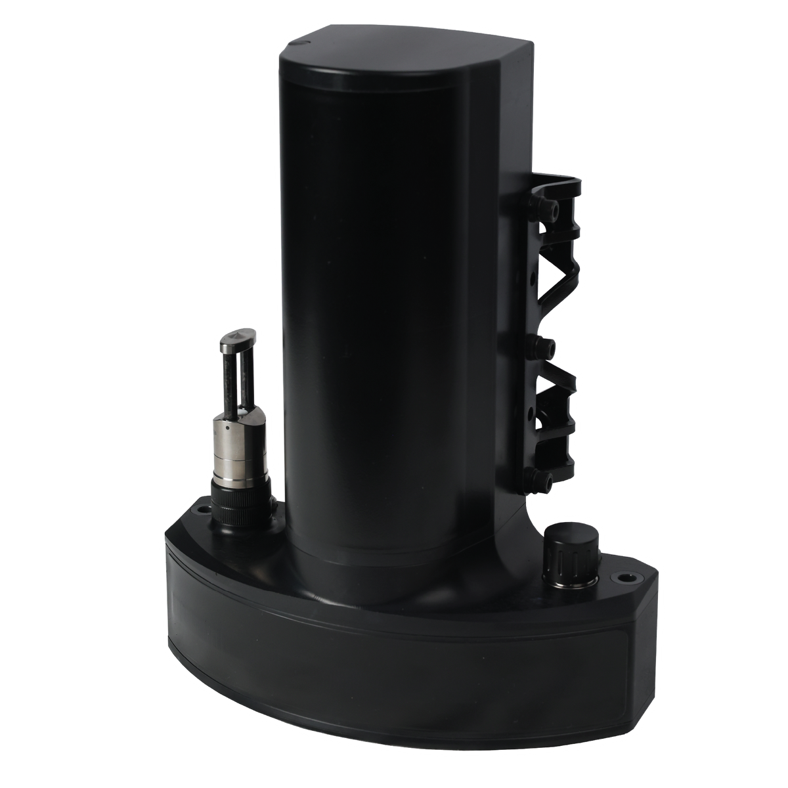
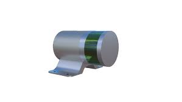
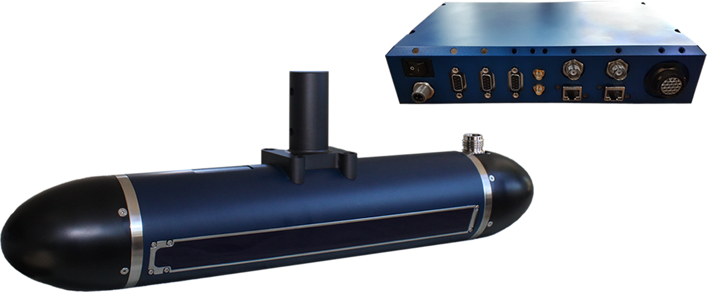
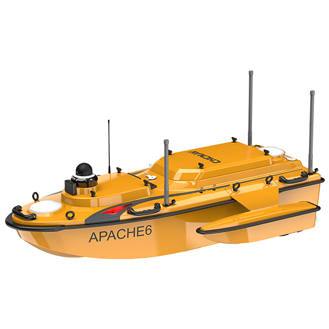
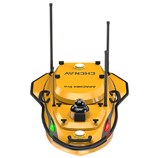
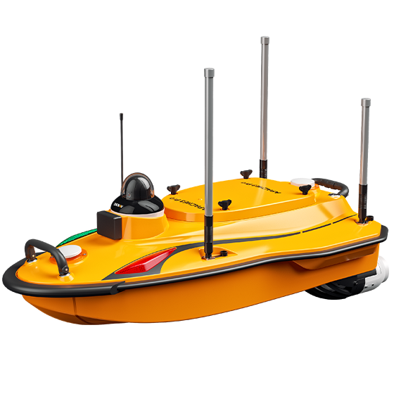
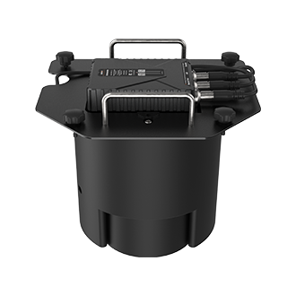

Equipment Sales
NORBIT multibeam sonar, Ping DSP 3D side scan sonar, CHCNAV USV, SBES, positioning, data acquisition and supporting survey equipment.
 Neptune 22
Neptune 22
Hong Kong Survey Instrumentation Specialist
Neptune 22 Equipment & Technical Services Ltd. provides purchase and rental options for advanced survey equipment from NORBIT, Ping DSP and CHCNAV, with specialist support for marine construction, infrastructure and engineering projects in Hong Kong.
About Neptune 22
Established in Hong Kong in November 2020, Neptune 22 supplies specialist coastal survey solutions and promotes advanced survey equipment for local marine construction, infrastructure and engineering projects. The company represents NORBIT multibeam sonar systems, Ping DSP 3DSS sonar and CHCNAV USV / echo sounder solutions, supported by trained survey personnel and regional technical backing.
Core Services
NORBIT multibeam sonar, Ping DSP 3D side scan sonar, CHCNAV USV, SBES, positioning, data acquisition and supporting survey equipment.
Flexible access to specialist survey instrumentation for project-based marine, civil engineering and inspection work.
USV, GNSS/INS, multibeam sonar, side scan sonar, SBES and mobile mapping integration for practical field deployment and data capture.
Product guidance, setup support, field workflow advice and coordination with NORBIT, Ping DSP and CHCNAV technical channels.
Equipment
Selected products available through Neptune 22 for hydrographic survey, underwater inspection, USV deployment and shallow-to-deep water bathymetry.

NORBITConfigurable ultra-high-resolution multibeam echo sounder platform for USV, vessel-mounted and specialist hydrographic survey applications.

NORBITCompact integrated multibeam sonar system for high-resolution bathymetry, shallow water mapping and fast mobilisation.
 NORBIT
NORBIT
WBMS bathymetry, WBMS STX, forward-looking sonar and iSTX360 for specialist survey and inspection needs.

NORBITiLiDAR laser, pole mount options and data acquisition software for efficient collection and processing workflows.

Ping DSPTurnkey 450 kHz 3D side scan and bathymetry sonar solution for over-the-side, pole-mounted and compact platform operations.

CHCNAVHigh-resolution multibeam USV platform for 3D bathymetric surveys, underwater object positioning and offshore construction support.

CHCNAVMulti-purpose USV for hydrographic, hydrological, dredging, water resource and emergency survey workflows.

CHCNAVCompact single-beam USV with GNSS RTK + INS navigation for shallow water bathymetric surveys in rivers, reservoirs and coastal zones.

CHCNAVDual-frequency single-beam echo sounder operating at 200 kHz and 33 kHz for USV and manned-vessel bathymetric survey work.
Project Highlights
Commencement of a mobile mapping system on a multi-beam unmanned surface vehicle in Hong Kong, integrating NORBIT iWBMS, NORBIT iLiDAR and CHCNAV APACHE 6 for combined hydrographic and 3D mapping workflows.
View LinkedIn post
Sr Lam Ngo Sum served as an assessor and introduced a NORBIT multi-beam USV with Leica BLK2GO mobile mapping to capture 3D point cloud data of the Tseung Kwan O seawall.

The NORBIT i80S supports accurate marine survey data collection with active roll and pitch stabilisation and multiple backscatter outputs.

NORBIT iWBMS WaveMaster AP+ supports shallow water sounding surveys with compact deployment and reliable positioning.
LinkedIn Activity
Selected LinkedIn activity connected with Neptune 22, hydrographic survey, mobile mapping and multibeam sonar work in Hong Kong.
A Hong Kong coastal scanning case combining Leica Pegasus TRK700 Neo mobile mapping with NORBIT Winghead i80S multibeam sonar. The post thanks Lam Ngo Sum from Neptune 22 for boat provision and multibeam sonar field work.
View LinkedIn discussionIndustry discussion on synchronising mobile mapping platforms with additional sensors, including a boat-based multibeam sonar workflow for infrastructure and asset intelligence.
View LinkedIn postConnect with Sr. Lam Ngo Sum for land surveying, hydrographic survey, mobile mapping and Neptune 22 equipment support updates.
Open LinkedIn profileAI Function
Use the enquiry helper to prepare a short project brief, then send the brief directly to Neptune 22.
Contact Us
Contact: Sr. Lam Ngo Sum
Phone: +852 9558 9161
Email: ns.lam@neptune-22.com
LinkedIn: linkedin.com/in/lam-ngo-sum-02877210b
Business Hours: Monday to Friday, 09:00 - 17:00
AI Enquiry Helper